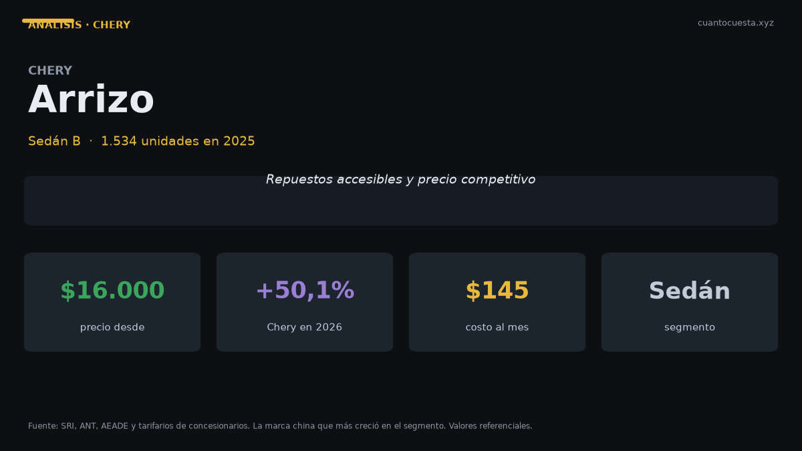

Chery Arrizo en Ecuador: análisis completo, costos y veredicto
Vendió 1.534 unidades en 2025 y Chery creció 50,1% en el primer semestre de 2026. Precio, repuestos, costos anuales y veredicto frente al Kia Soluto.

El Chery Arrizo vendió 1.534 unidades en 2025, en un año en que su marca creció +50,1% durante el primer semestre de 2026. Se comercializa entre $16.000 y $20.000 y su argumento principal es concreto: repuestos accesibles frente a sedanes de marcas con más historia en el país.
El contexto importa. En un mercado de 130 marcas y más de 600 modelos compitiendo por 124.505 unidades anuales, las marcas chinas pasaron de ser una apuesta riesgosa a ser una porción relevante del mercado. Chery es una de las que más creció.
El dato que decide la compra de un Chery no es la ficha técnica: es el precio y disponibilidad del repuesto. Antes de firmar, pregunta cuánto cuesta un juego de pastillas delanteras, un amortiguador y un faro. Si no te dan los precios por escrito, camina.
Ficha técnica
| Dato | Chery Arrizo |
|---|---|
| Segmento | Sedán B |
| Motor | No especificado públicamente (varía por versión) |
| Potencia | No especificado públicamente |
| Torque | No especificado públicamente |
| Transmisión | No especificado (varía por versión) |
| Consumo homologado | No publicado en las fuentes consultadas |
| Dimensiones | No especificadas públicamente |
| Maletero | No especificado |
| Garantía | Confirmar cobertura de la versión en la agencia |
| Precio | $16.000 – $20.000 |
| Unidades vendidas 2025 | 1.534 |
Aclaración importante: "Arrizo" es una familia de sedanes, no un solo modelo. Bajo ese nombre se comercializan distintas generaciones y versiones, por lo que las cifras de motor, potencia y equipamiento varían por versión. No publicamos números que no podamos verificar, y las fichas de Chery Ecuador no detallan estos datos en el material consultado.
Precio y versiones en Ecuador
| Rango | Precio de referencia |
|---|---|
| Entrada | $16.000 |
| Tope | $20.000 |
Los $4.000 de diferencia entre entrada y tope corresponden a versiones distintas dentro de la familia Arrizo: cilindrada, caja automática y nivel de equipamiento. Antes de comparar precios, asegúrate de estar comparando la misma versión: es el error más común cuando se cotiza un "Arrizo" sin especificar cuál.
Ventaja de precio: el Arrizo entra en $16.000, unos $200 por encima del Chevrolet Sail y $200 por debajo del asiento del Kia Soluto base ($15.799, listado en Patiotuerca). Compite directamente contra el Soluto, el Sail y el Nissan Versa.
Cuánto cuesta mantenerlo
Escenario: 12.000 km al año, versión de $20.000, combustible Extra o Ecopaís a $3,26 el galón y una estimación declarada de 14 km/l mixto, porque el consumo homologado no está publicado.
| Rubro anual | Rango estimado |
|---|---|
| Combustible (estimación 14 km/l) | ~$738 |
| Mantenimiento (aceite, filtros, alineación) | $300 – $500 |
| Matrícula y revisión técnica | $180 – $250 |
| Seguro (≈4% del valor) | $640 – $800 |
| Llantas (juego cada ~40.000 km) | ~$150 |
| Otros (lavado, imprevistos, multas) | $100 – $200 |
| Total anual | $2.108 – $2.638 |
| Equivalente mensual | $176 – $220 |
La fortaleza del Arrizo en este cuadro es el mantenimiento. Con repuestos accesibles, el costo de servicios se mantiene en la franja baja del segmento: $300 a $500 al año, frente a los $500 a $700 que reporta una marca como Mazda para su CX-5 o Mazda 3.
Precios unitarios de referencia en talleres: cambio de aceite y filtro $50–$90 cada 5.000 km, alineación y balanceo $30–$50, filtro de aire $20–$40, filtro de combustible $30–$60, líquido de frenos $40–$70, bujías $50–$100, pastillas de freno delanteras $80–$150, amortiguadores delanteros $200–$350, batería $100–$200, llanta $120–$250, correa de distribución $250–$400.
Al comprar un auto de marca con red en expansión, la pregunta clave no es cuánto cuesta el repuesto en catálogo, sino cuánto tarda en llegar y si hay stock nacional. Pide eso por escrito también.
Equipamiento y seguridad
Los datos por versión no están disponibles en las fuentes consultadas, así que la verificación queda de tu lado. Estos cinco puntos deben quedar documentados antes de firmar:
Airbags. En un sedán de $16.000 a $20.000, lo mínimo razonable hoy son 4 airbags; 6 es lo deseable. Pide el número de tu versión exacta.
ABS y control de estabilidad. El ABS debe venir de serie. El control de estabilidad es indispensable si manejas en Quito, Cuenca o Loja.
Red de talleres. Confirma cuántos puntos de servicio tiene la marca en tu ciudad y en las ciudades que recorres. Un repuesto barato no sirve si el taller más cercano está a 300 km.
Disponibilidad de repuestos. Pide el precio y el plazo de entrega de tres piezas de desgaste: pastillas delanteras, amortiguadores y filtro de combustible.
Garantía. Cobertura en años, en kilómetros y exclusiones por kilometraje anual.
Para quién es y para quién no
Es para ti si:
- Buscas un sedán nuevo por menos de $20.000 con equipamiento completo
- Valoras el precio accesible de repuestos por encima del prestigio de marca
- Haces recorrido urbano e interurbano sobre asfalto
- Estás dispuesto a verificar lista de equipamiento y red de talleres antes de comprar
No es para ti si:
- La reventa a cinco años es tu prioridad: las marcas establecidas retienen mejor valor
- Necesitas la red de servicio más extensa del país
- Entras a lastre con frecuencia: necesitas SUV o camioneta
- No vas a verificar por escrito airbags y red de talleres
Comparación con su rival directo
| Modelo | Precio | Unidades 2025 | Dato clave |
|---|---|---|---|
| Chery Arrizo | $16.000 – $20.000 | 1.534 | Repuestos accesibles, marca en crecimiento |
| Kia Soluto | $15.799 – $18.790 | 8.725 | El auto de pasajeros más vendido del país |
| Nissan Versa | $18.500 | No especificado | 1.6 L, 106 hp |
| Chevrolet Sail | $16.500 | No especificado | Precio de entrada similar |
La comparación contra el Soluto es la más dura para el Arrizo: el Kia cuesta $201 menos en su versión listada ($15.799), ofrece 475 litros de maletero, 6 airbags en la versión EX, consumo homologado de 15,5 km/l mixto y garantía de 10 años o 160.000 km.
El Arrizo responde con un punto que el Soluto no puede igualar en todos los casos: repuestos más baratos. En el largo plazo, para quien planea tener el auto 8 o 10 años y mantenerlo fuera del concesionario, esa diferencia se acumula. Pero el Soluto sigue vendiendo 5,7 veces más unidades (8.725 contra 1.534), y eso se traduce en repuestos disponibles en cualquier parte del país y en una reventa mucho más líquida.
Veredicto
El Chery Arrizo es un sedán razonable si el precio del repuesto manda en tu decisión. Cuesta entre $16.000 y $20.000, la marca creció 50,1% en el primer semestre de 2026 y el costo de operación se ubica entre $176 y $220 al mes.
Tres verificaciones antes de firmar: número exacto de airbags de tu versión, presencia de control de estabilidad, y precios de tres repuestos de desgaste por escrito con plazo de entrega. Si esas respuestas te convencen, la cuenta cierra.
Si el criterio es reventa, red de talleres nacional y garantía más larga, el Kia Soluto sigue siendo la apuesta segura: por $201 menos en la versión de entrada, ofrece más espacio y una cobertura de 10 años. La diferencia entre ambos no es la calidad del producto, es la red que hay detrás.
Precios referenciales de lista a septiembre de 2026. Las especificaciones del Arrizo no están publicadas en las fuentes consultadas y varían por versión. Los valores de costo son estimaciones declaradas. Varían precios por agencia y promoción. No constituye asesoría financiera.
Sigue leyendo
Chevrolet D-Max en Ecuador: análisis completo, costos y veredicto
Es la camioneta más vendida de Ecuador con 5.515 unidades en 2025. Precio, costo real de operac
Chevrolet Groove en Ecuador: análisis completo, costos y veredicto
El SUV más vendido de Ecuador: 4.063 unidades en 2025. Precio desde $19.999, cuota de $309 al m
GWM Poer en Ecuador: análisis completo, costos y veredicto
La camioneta ensamblada en Ambato que rompió el precio del 4x4: 4.092 unidades en 2025. Precio,
Hyundai Grand i10 en Ecuador: análisis completo, costos y veredicto
Segundo auto de pasajeros más vendido de Ecuador con 1.690 unidades en 2025. Precio desde $13.9
Hyundai Tucson en Ecuador: análisis completo, costos y veredicto
Vendió 2.395 unidades en 2025 y arranca en $32.499. Motor 2.5 L, 6 airbags y garantía de 5 años
Cómo usamos estos datos
Las cifras de esta guía provienen de fuentes públicas oficiales y tarifarios de concesionarios publicados. Los valores son referenciales: tasas municipales, promociones y precios de repuestos varían. Verifica siempre en la entidad o concesionario antes de decidir.